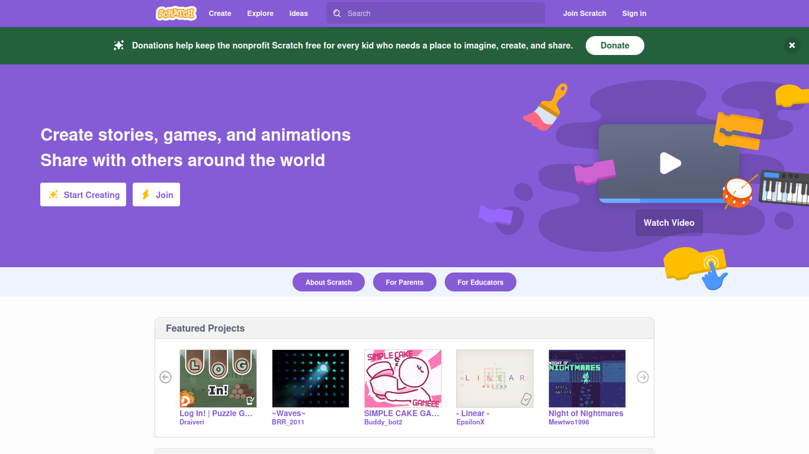
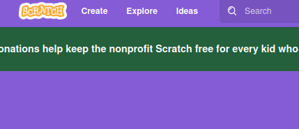
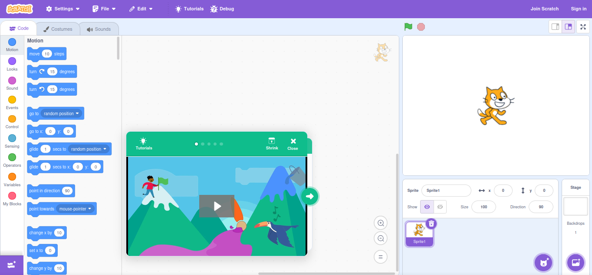

How to use Scratch:
First, to get to Scratch, go to scratch.mit.edu which is the website. When you get to the website, it should look somthing like this.

This is the starting screen of Scratch. To create something, click on the create button in the nav bar.

When you enter, it shows your project with a sprite (thats the character on the stage) of scratch cat (the default sprite), and a tutorial. I suggest that you watch the tutorial.
